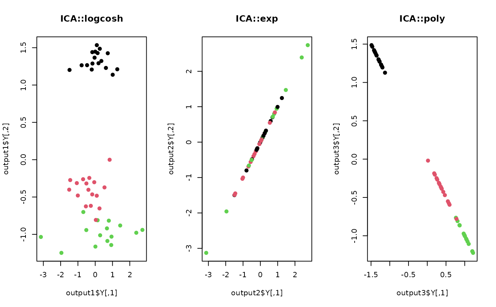

do.ica is an R implementation of FastICA algorithm, which aims at
finding weight vectors that maximize a measure of non-Gaussianity of projected data.
FastICA is initiated with pre-whitening of the data. Single and multiple component
extraction are both supported. For more detailed information on ICA and FastICA algorithm,
see this Wikipedia page.
do.ica( X, ndim = 2, type = "logcosh", tpar = 1, sym = FALSE, tol = 1e-06, redundancy = TRUE, maxiter = 100 )
| X | an \((n\times p)\) matrix or data frame whose rows are observations and columns represent independent variables. |
|---|---|
| ndim | an integer-valued target dimension. |
| type | nonquadratic function, one of |
| tpar | a numeric parameter for |
| sym | a logical value; |
| tol | stopping criterion for iterative update. |
| redundancy | a logical value; |
| maxiter | maximum number of iterations allowed. an \((n\times ndim)\) matrix whose rows are embedded observations. a list containing information for out-of-sample prediction. a \((p\times ndim)\) whose columns are basis for projection. |
In most of ICA literature, we have $$S = X*W$$ where \(W\) is an unmixing matrix for
the given data \(X\). In order to preserve consistency throughout our package, we changed
the notation; \(Y\) a projected matrix for \(S\), and projection for unmixing matrix \(W\).
Hyvarinen A, Karhunen J, Oja E (2001). Independent component analysis. J. Wiley, New York. ISBN 978-0-471-40540-5.
# \donttest{ ## generate data of 100 observations X <- aux.gensamples(n=100) ## 1. use logcosh function for transformation output1 <- do.ica(X,ndim=2,type="logcosh") ## 2. use exponential function for transformation output2 <- do.ica(X,ndim=2,type="exp") ## 3. use polynomial function for transformation output3 <- do.ica(X,ndim=2,type="poly") ## Visualize three different projections opar <- par(no.readonly=TRUE) par(mfrow=c(1,3)) plot(output1$Y, main="ICA::logcosh") plot(output2$Y, main="ICA::exp") plot(output3$Y, main="ICA::poly")